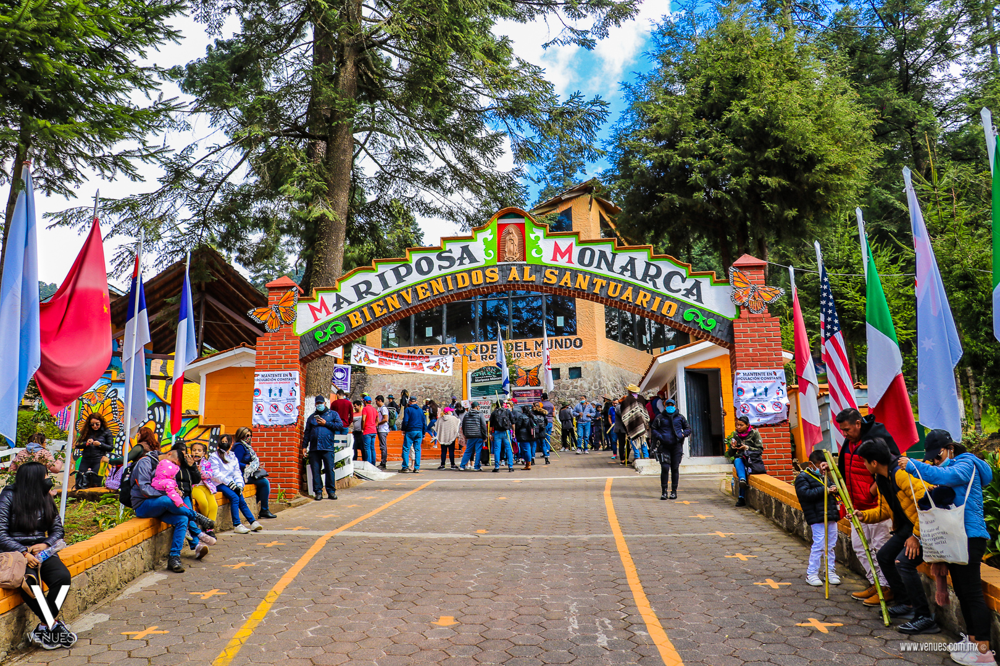

| Inicio | Destinos turísticos | Galería |
Para llegar a los santuarios michoacanos, lo más recomendable es tomar el camino hacia el Pueblo Mágico de Angangueo, el cual colinda con el Estado de México, muy cerca de El Oro.
El sitio de hibernación de la Mariposa Monarca se encuentra ascendiendo por la montaña a lo largo de aproximadamente dos kilómetros. El recorrido -que es posible realizar a pie o a caballo- se conforma de bosques de oyamel, pino y cedros, a una altitud de 3,200 msnm. Busca la ayuda de un guía local, pues además de llegar al lugar exacto donde viven estos lepidópteros, conocerás sus características y otros datos curiosos.
El santuario tiene un horario de 8:00 a 19:00 hrs. todos los días de la semana, con un costo de admisión de $45 para los adultos y $35 para niños (aproximadamente). El centro ecoturístico cuenta con puestos de antojitos, tiendas de artesanías y baños
Ubicación:Desde Ocampo, hay un camino adoquinado de otros 10 kilómetros aproximadamente hasta El Rosario.
Para arribar a los enormes árboles llenos de mariposas es necesario ascender por llanos y montañas por más de 2.5 kilómetros. Durante el camino descubrirás parajes y tres miradores (con abismos y riachuelos) que te permitirán tomar fotografías sorprendentes. El santuario cuesta $35 para los adultos y $30 para niños (aproximadamente). Hay zona de comida típica y baños.
Ubicación: Está a aproximadamente 10 kilómetros de Angangueo.
Si quieres planear tu escapada a Michoacán dale clic aquí .
Toma en cuenta: La zona suele ser fría, por lo que no olvides ir bien abrigado y con zapatos cómodos. El recorrido, que dura más de dos horas por viaje, requiere de buena condición física. Si deseas hacerlo a lomo de caballo, éstos tienen un costo aproximado de $150.
Información recuperada de